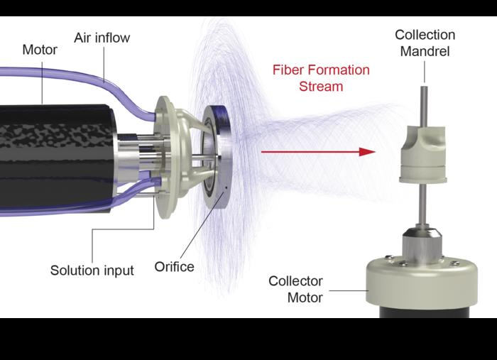
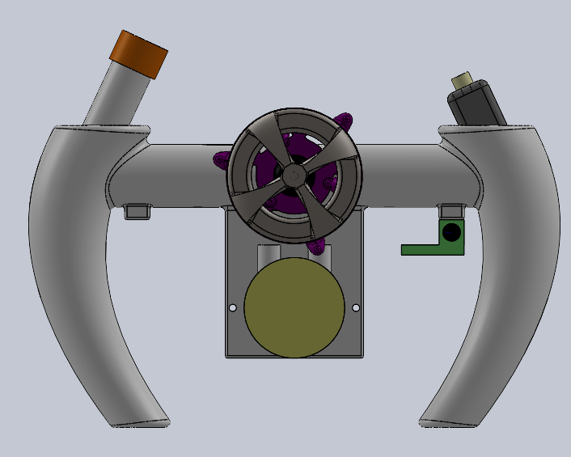
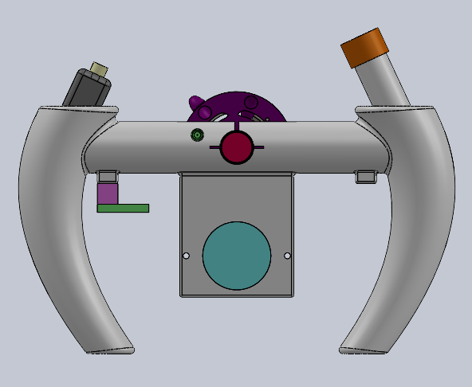
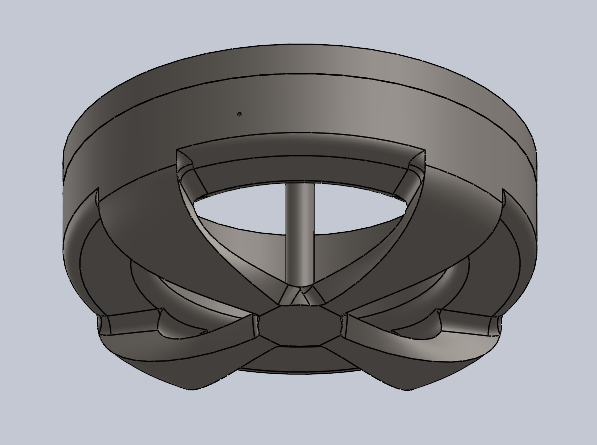
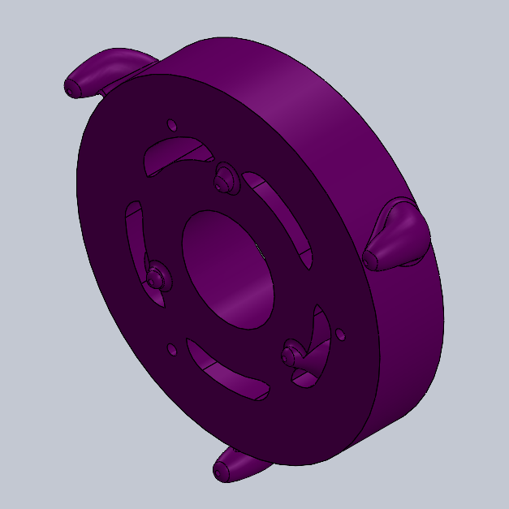
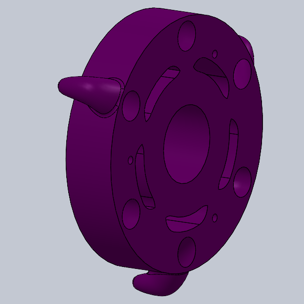

Experimental development
Portable FRJS
A handheld nanofiber manufacturing system integrating high-speed rotation, focused air jets, and solution delivery.
How the FRJS process works
This reference schematic illustrates the bench-scale process that motivated the handheld design: solution enters a rotating assembly, fibers emerge through an orifice, and airflow directs the fiber stream toward a collector.







Objective
Miniaturize a traditionally bench-scale Focused Rotary Jet Spinning process into a handheld system.
My contribution
Designed and developed the system, created CAD models, and integrated a high-speed turbine-driven spinneret, focused air-jet system, and solution delivery architecture.
Design approach
Used iterative prototyping and testing to understand subsystem interactions and balance rotational stability, airflow performance, and compact packaging. Experimental evidence informed design decisions.
Skills used and developed
CAD development, compact component packaging, prototyping, and experimental evaluation.
The project involved assessing how changes to rotation, airflow, and solution delivery affected the complete assembly.